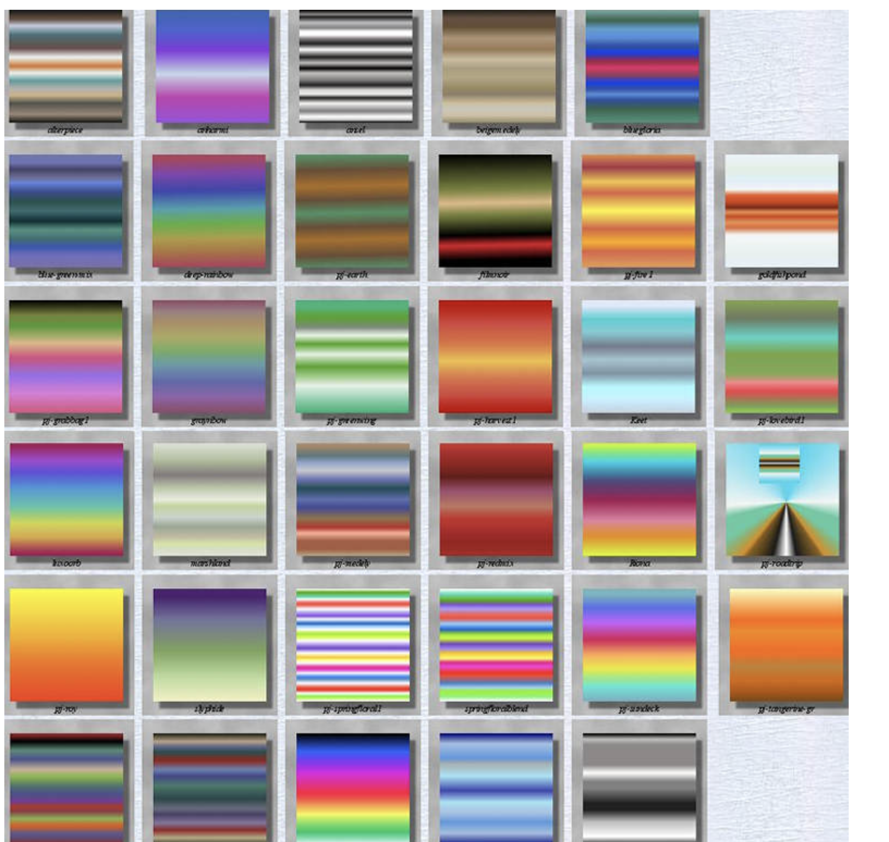

handmade-web-carpenter
"I evoke the term 'handmade web' in order to make a correlation between handmade web pages and handmade
print materials, such as zines, pamphlets, and artists books. "
"These are not artifacts of a dead web but rather, signposts on a map of a living web pointing to a web as
it once was, a web in progress, a web in the making."
One Mile Scroll
after that we scroll and scroll. The hand is made to work. Through the labour of the body the
virtual space of the browser window is transformed into an actual, physical distance.
From the Digital to the Bookbound (2014)
"The iPad works because users can’t know how it works" (15). Reading the web on an iPhone,
iPad, or similar device, readers do not have the option of viewing the page source. The iPad provides
consumers with access to materials created by others, but cannot easily be used as a tool in the
handcrafting of new materials.
Surf-club-broskoski.
"I definetly remember thinking it was corny at first, specifically the tagging sysytem, and a lot of my early
bookmarks were tagged in an intentionally unhelpful way."
"- that showing in a gallery or physical space wa degrading and an inevitable mistranslation of the work, which was ideally meant to be seen by someone in therir bedroom at 2 a.m"
here is a link to the gallery website
